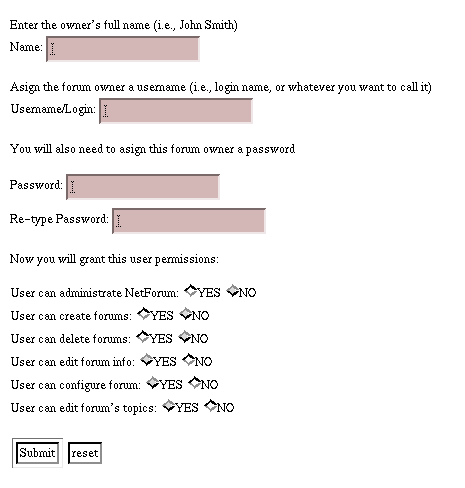
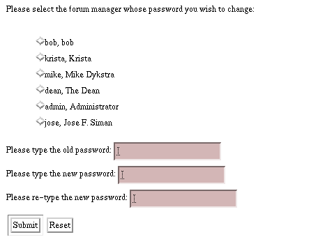
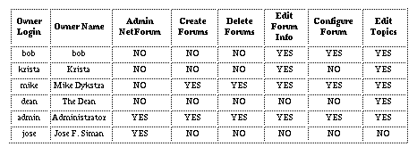

Manage Forum Owners
This adminsitrative option allows you to mananage the
different people that have access to the administrative
features of NetForum.
Only the site administrator or
someone with the right to administer NetForum can enter to
this menu.
Usually you will come to this menu if different people in your
site are in charge of forums and you want to delegate the
forum management responsibilities to them. That is, other people
aside from the NetForum administrator can manage their forums
with the rights/privileges that the administrator assigns to them.
Below, we discuss the individual options you have from this menu:
Add Forum Owner
When creating a forum you are prompted to assign the forum a
forum owner . If you (as the administrator) want to allow
other persons to manage their forums, you could create a NetForum
account for them via this option. If you do not want to allow
other people to manage their forums, you probably won't create
an account for them and set the forum owner to admin
when creating the forums for them.
When adding a forum owner, you will be prompted to give the
new owner a "username" and "password". Type a username that is
related to the owner's full name so that it is easier for you
to relate a forum owner's real name with his/her username.
Give them any password you feel like, but write it down somewhere
so that you can notify the new forum owner what his/her password
is (the new forum owner will be able to change his/her password
after login in).
Next, you will be presented with different
rights/privileges you can give new forum owners to the NetForum
administrative features. These
righst include:
- Administer NetForum: This gives the forum owner full access
to the NetForum administrative features.
- Create Forums: This allows the forum owner to create as many
forums as he/she wishes.
- Delete Forums: This allows the forum owner to delete
only the forums he/she created.
- Edit Forums: This allows the forum owner to edit the forums
he/she created. This only includes changing the forum information.
- Configure Forum: This allows the forum owner to reconfigure
the forum(s) he/she created. This includes modifying the forum's
header and footer and the way the forum's messages are displayed,
etc.
- Edit Forum's Topics: This allows the forum owner to edit
the topics, messages, and replies of the forum(s) he/she created.

Remove Forum Owner
This option allows you to remove a forum owner's account from NetForum.
You will be able to choose the forum owner you want to remove from a
list of all the current forum owners in the NetForum system.
Do not remove the forum owner that has full privileges (i.e,
admin) to NetForum,
otherwise you won't be able to access all the features of admin.
After removing a forum owner, you will be notified if there were any
forums that belonged to the forum owner you removed so that you can
change their ownership if you want to.
Change Owner's Rights
This option allows you to change the administrative rights of a forum
owner. These rights are explained above in "Add Forum Owner".
Change Owner's Password
As a NetForum administrator, this option allows you to change any forum
owner's password (as long as you know it). A forum owner who does not have
access to the Manage Forum Owner's menu is able to change his/her password
by accessing a different option called "Change Password". This option
will appear on the main menu in place of "Manage Forum Owners".

List Owners
Choosing this option will produce a list of all the forum owners in your
NetForum site. In addition, the list will display each forum owner's
rights/privileges.

Copyright © 1995, 1996 Board of Regents of the University
of Wisconsin System. All rights reserved.
|